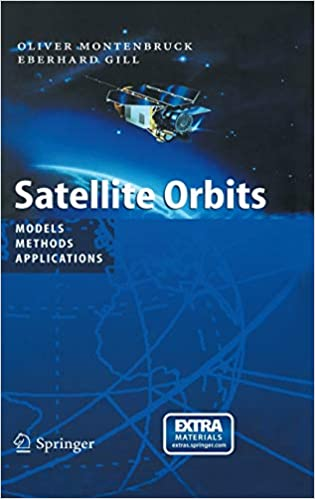

openspace
modules
examples
references
Fundamentals of Astrodynamics and Applications, 4th Edition
Satellite Orbits: Models, Methods, and Applications
openspace
»
references
»
Satellite Orbits: Models, Methods, and Applications
View page source
Satellite Orbits: Models, Methods, and Applications
¶

Authors: Oliver Montenbruck and Eberhard Gill
ISBN-10: 354067280X
ISBN-13: 978-3540672807